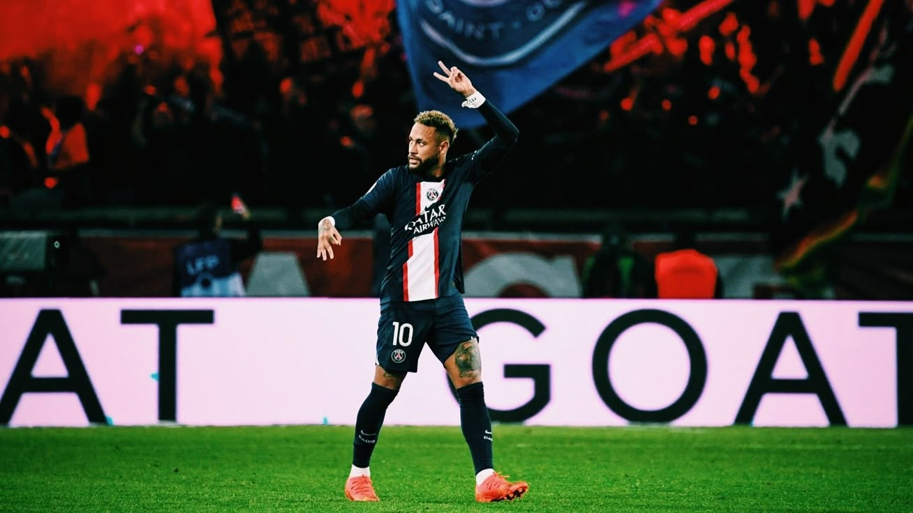

Mes Passions
Voici deux domaines qui me passionnent depuis longtemps.

Sport Automobile
Une passion pour la vitesse, les sensations, l’ingénierie qui se cache derrière chaque voiture et le talent de Lewis Hamilton.

Football
Pratiqué pendant 14 ans, le sport qui m'a construit, qui m'a vu gagner, perdre, heureux, pleurer..